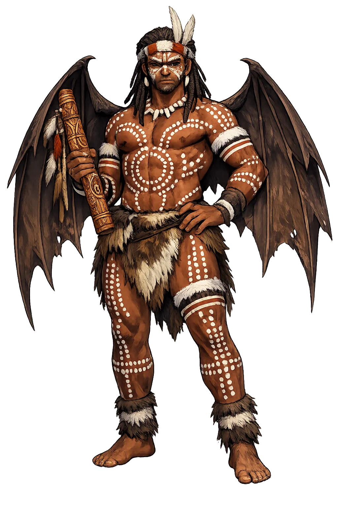
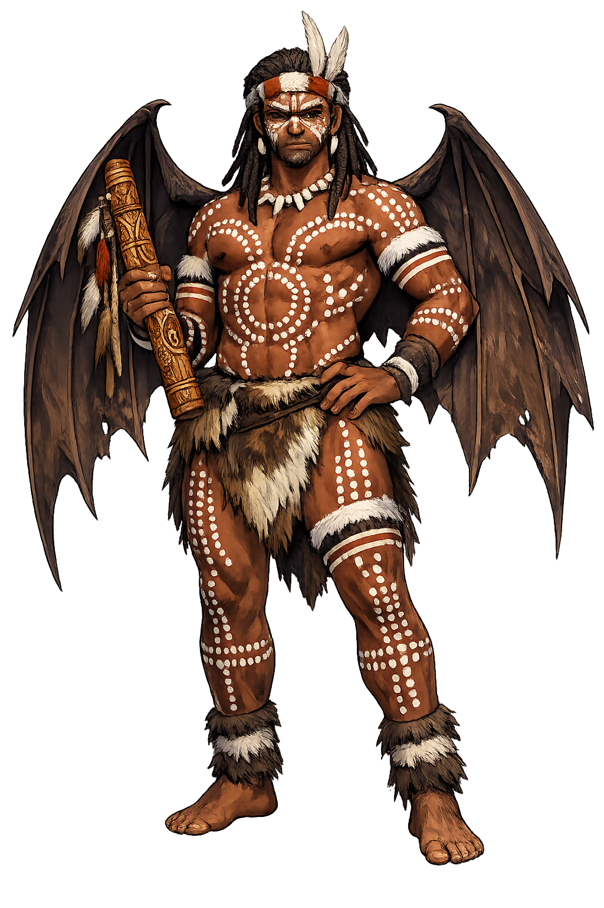

The Authentic Orthography
Trickster, Moth Man · Bat-winged spirit of the Australian night

Unicode restoration and ASCII comparison
Tjinimin
The name survives in scholarly transliteration. Tjinimin is the standard Aboriginal romanisation, documented in academic sources — “The moth man”. Because the spelling uses only Latin letters, the form is the same in both ASCII and Unicode.
No indigenous writing system is securely attested for individual aboriginal names. The form shown is a modern scholarly transliteration.
tjinimin
The plain tjinimin form is identical to the Unicode restoration. Because this name is already written in Latin letters, no diacritics, stress, or script information were lost — only capitalization differs.
Tjinimin
The Unicode restoration does not need to recover lost marks for Tjinimin. Its value is canonical spelling and consistent cataloguing, not the reconstruction of erased orthography. The domain is readable as-is to both DNS and humanity.
Tjinimin.com → tjinimin.com
The non-ASCII characters in Tjinimin are encoded while the ASCII remains visible. To the DNS, it is Punycode. To humanity, it is Tjinimin.
How Tjinimin is preserved in writing
No indigenous writing system is securely attested for individual aboriginal names. The form shown is a modern scholarly transliteration.
Contribute scholarly provenance →Owned, ideal, and ASCII forms of Tjinimin
Tjinimin
The full Unicode restoration. tjinimin.com is not in the PuniCodex collection — it is watched for release; if it drops, this temple upgrades to an owned flagship.
How Tjinimin was spoken
Bat, Rainbow Serpent, and Ancestral Law
Tjinimin is an ancestral being in the mythology of the Murrinh-Patha peoples of the Daly River region, Northern Territory. He is remembered as an ancestor of the Australian peoples, closely associated with the bat or flying fox and with Kunmanggur, the great Rainbow Serpent. His story turns on a quarrel, a vow, and the origin of the bat's short nose — a narrative that encodes law, social restraint, and the place of humans within the Dreaming.
Tjinimin is identified in Murrinh-Patha tradition as an ancestor of the Australian peoples, a foundational figure in the genealogical memory of the Daly River communities.
The figure is associated with the bat; a key myth explains the bat's short nose as the result of Tjinimin's vow and transformation.
Tjinimin's narrative is bound to Kunmanggur, the Rainbow Serpent, whose consorts and authority set the moral stakes of the story.
His attempt to transgress social boundaries, his defeat, and his lasting vow form a cautionary tale about desire, consequence, and the establishment of ancestral law.
Stories of Tjinimin
The principal Murrinh-Patha narrative of Tjinimin, recorded by W. E. H. Stanner, is a compact myth of boundary-crossing and transformation. It explains kinship, animal form, and the moral order through a single ancestral episode.
Tjinimin quarrelled with Kunmanggur, the great Rainbow Serpent. He desired Kunmanggur's consorts, the Green Parrot-Girls, and sought to take them for himself. The dispute set the ancestral being against the authority of the Rainbow Serpent, testing the limits of proper relationship and social order.
Defeated in the quarrel, Tjinimin hung himself upside down in a tree. There he gazed at the stars and made a solemn vow: he would never have sex again. The posture of suspension and the vow of abstinence mark a radical withdrawal from the social and reproductive world.
Soon after his vow, Tjinimin's nose fell off. The myth explains this as the reason bats in the region have short noses: the ancestral being's bodily transformation became the permanent form of the animal with which he is associated. What began as social conflict ended as biological signature.
Tjinimin is a difficult ancestor because his story turns on failure rather than triumph. He desires what is not his, loses, withdraws, and is transformed. The myth does not celebrate his ambition; it records the cost of transgression and the permanent mark it leaves on the body. In this he is close to the trickster type, but he is also a cautionary figure: the ancestor whose own choice limits him.
Enter Extended Lore